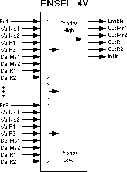

ENSEL_4V: Enable selector for four values
Block ENSEL_4V [FB456] as a central block allows for selective interconnection of 8 multistate values (1of 8) based on particular priority. The multiple inputs have two multistate values and two real values available.
Functionality
To interconnect multiple multistate and real values based on a specified priority, the block ENSEL_4V forwards the values of the multiple inputs [Val1xx..Val8xx] to outputs [Outxx].

The following conditions apply:
- A multistate signal is available at the impacted value input (e.g. Off-Stage15).
- A real value is pending at the corresponding value input.
- The impacted value inputs [Val1xx..Val8xx] = Off-Stage15 or real value is enabled by the corresponding enable pin [En1..8] = 1 (Yes).
- There is no higher-value input [Val1xx...Val8xx] is pending at outputs [Outxx].
- If multiple value inputs [Val1xx..Val8xx] are enabled [En1..8], the pin with the highest priority (lowest number) is switched to output [Outxx].
- Output [InNr], contains an integer number according to the number of the input [Val1xx..Val8xx] routed to output [Outxx].
- If all enable pins [En1..8] = 0 (No), output [Outxx] is set to the default value [Defxx] and output [Enable] = 0 (No).
- If the outputs [Outxx] represent a valid value, output [Enable] = 1 (Yes).
Function table
Inputs | Outputs | |||||
En1..8 (Boolean) | Val1..8Msx (Multistate | Val1..8Rx (Real) | Enable (Boolean) | OutxMsx (Multistate) | OutxRx (Real) | InNr (Integer) |
0 (No) | Off-Stage15 | Value | 0 (No) | DefxMsx | DefxRx | 0 |
1 (Yes) | Off-Stage15 | Value | 1 (Yes) | Off-Stage15 | Value | 1 of 8 |
Inputs
Pin | E | Description | |
En1..En8 | pa | Enable 1..8. Boolean (Default value = 0) | |
0 (No) | The impacted multiple values inputs [Valxx1..8] = "Value" are not enabled. | ||
1 (Yes) | The impacted multiple values inputs [Valxx1..8] = "Value" are enabled by the corresponding enable pin [En1..25]. Values with the highest priority (lowest number) are transmitted to outputs [Outxx]. | ||
Val1Ms1..Val8Ms1 | pa | Value 1..8, multistate 1. Multistate (Default value = 1) | |
Val1Ms2..Val8Ms2 | pa | Value 1..8, multistate 2. Multistate (Default value = 1) | |
Val1R1..Val8R1 | pa | Value 1..8, Real 1. Real (Default value= 0.0) | |
Val1R2..Val8R2 | pa | Value 1..8, Real 2. Real (Default value= 0.0) | |
DefMs1 | pa | Default value, multistate 1. Multistate (Default value = 1) | |
DefMs2 | pa | Default value, multistate 2. Multistate (Default value = 1) | |
DefR1 | pa | Default value, Real 1. Real (Default value = 0.0) | |
DefR2 | pa | Default value, Real 2. Real (Default value = 0.0) | |
Outputs
Pin | E | Description |
Enable | a | Release. Boolean (Default value = 0) |
OutMs1 | a | Multistate output 1. Multistate (Default value = 1) |
OutMs2 | a | Multistate output 2. Multistate (Default value = 1) |
OutR1 | a | Real output 1. Real (Default value= 0.0) |
OutR2 | a | Real output 2. Real (Default value = 0.0) |
InNr | a | Input number. Integer (Default value = 0) |
Engineering
If Enable1 then | Value:=Value1; Enable:=Yes. |
elsif Enable 2 then | Value:=Value2; Enable:=Yes. |
elsif Enable 3 then | Value:=Value3; Enable:=Yes. |
... |
|
else | Enable:=No. |
endif |
|
Process response
Standard (see General rules and information).
Troubleshooting
Standard (see General rules and information).